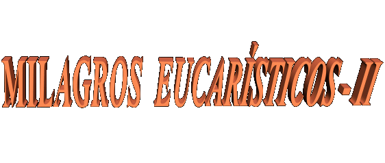

 8�, 9� y 10� Milagros - Ocurrieron en Naju, el 30 de junio, 1� y el 2 de
julio de 1995, con miles
8�, 9� y 10� Milagros - Ocurrieron en Naju, el 30 de junio, 1� y el 2 de
julio de 1995, con miles  de peregrinos que llenaban la Iglesia Parroquial
en la conmemoraci�n del 10� Cumplea�os del derramamiento de l�grimas
por la imagen de NUESTRA SE�ORA. La Santa Misa fue por la noche
del 30 de junio y concelebrada por ocho sacerdotes. La vidente se
sent� en el fondo de la Iglesia y fue la �ltima a tomar
comuni�n. En el momento sagrado de la comuni�n, de repente, las
personas que estaban cerca de Julia pudieron observar el
instante en que la Sagrada Hostia en su lengua se transform� en
Cuerpo y Sangre del SE�OR JES�S. Asustados y repletos de
emoci�n, muchas personas lloraron delante de la realidad, bien a la
vista de todos, que pudieron contemplar el Cuerpo Vivo del propio DIOS.
Los sacerdotes y las personas que estaban en las proximidades
testificaron el notable fen�meno.
de peregrinos que llenaban la Iglesia Parroquial
en la conmemoraci�n del 10� Cumplea�os del derramamiento de l�grimas
por la imagen de NUESTRA SE�ORA. La Santa Misa fue por la noche
del 30 de junio y concelebrada por ocho sacerdotes. La vidente se
sent� en el fondo de la Iglesia y fue la �ltima a tomar
comuni�n. En el momento sagrado de la comuni�n, de repente, las
personas que estaban cerca de Julia pudieron observar el
instante en que la Sagrada Hostia en su lengua se transform� en
Cuerpo y Sangre del SE�OR JES�S. Asustados y repletos de
emoci�n, muchas personas lloraron delante de la realidad, bien a la
vista de todos, que pudieron contemplar el Cuerpo Vivo del propio DIOS.
Los sacerdotes y las personas que estaban en las proximidades
testificaron el notable fen�meno.
Terminada la Santa Misa,
los peregrinos acompa�aron la vidente hasta la Capilla, donde se encontraba
la imagen de NUESTRA SE�ORA, para el servicio nocturno de oraci�n
en continuidad las conmemoraciones. Con el recinto
completamente ocupado por los fieles muy animados que oraban y
cantaban himnos en laudaci�n a la VIRGEN MARIA, empez� la
ceremonia.
En el medio de la
oraci�n Julia sinti� dolores terribles en el �rea del abdomen, en reparaci�n
de los abortos que asesinan tantos inocentes. Entonces sucedi�
una escena impresionante que retrataba fielmente la resistencia
desesperada del ni�o que no deseaba salir del �tero de su madre
que quer�a abortarlo, y por medio de la boca de la vidente,
manifestaba todo su pavor y su miedo por la muerte que se acercaba,
y gritaba: " No mam�,
no mi madre, no me mate".
En el silencio de la Capilla, donde s�lo se oyeron los gritos
dolorosos de la Vidente, Fray Francis Su, de la Malasia, invit� a
todos quedarse en las rodillas y orar a la conversi�n de las
personas que son responsables por la cruel muerte de los beb�s.
Con emoci�n y llorando las personas oraron con gran fe y en
agradecimiento a DIOS por aquella experiencia
m�stica maravillosa.
Eran 3 horas
y 45 minutos del 1� de julio y toda la asamblea en silencio escuchaban
el relato traducido al ingl�s, de los �ltimos mensajes de nuestra
MADRE BENDITA. De repente, Julia que estaba en la primera hilera
al lado de Fray Su, Fray Pete Marcial y otros, se puso de pie y
se proyect� en direcci�n a la imagen, al mismo tiempo que
extendi� las manos vigorosamente, como tentando agarrar algo
que nadie vio. Aconteci� que  mientras
hac�an la lectura de los mensajes
que ella mismo hab�a recibido de la VIRGEN, vio la imagen de
JES�S Crucificado que estaba en la pared, arriba donde estaba la
imagen de la VIRGEN MARIA, ganar vida, y el SE�OR con el rostro
repleto de sufrimiento, dejaba el sangre salir en cantidad de
siete heridas m�s grandes hechas por los clavos de hierro en los
pies y en las manos, por la lanza del soldado romano que clav�
en el costado derecho de JES�S, por la apertura del Coraz�n
traspasado y por la herida en la testa causada por la Corona
de Espinos. De las siete heridas, salieron el precioso sangre
que luego se transform� en c�rculos blancos, o sea, en
admirables Hostias Sagradas. Algunas personas en la Capilla
dijeron que vieron una luz brillante, como si fuese un rayo
r�pido que sali� del crucifijo. Otras personas oyeron un ruido
similar a la ca�da de granizo. Las Hostias Sagradas salieron de
las heridas de JES�S y empezaron a caer. Fue en este justo
momento que Julia se apresur� y estir� las manos con
determinaci�n a cogerlas y no permitir que ellas cayesen en
la tierra. Pero las Hostias graciosamente evitaron las manos de
la vidente y se acomodaron en el altar, a los pies de la imagen de
la VIRGEN MARIA, en la presencia de la asamblea sorprendida, que
pudieron verlas en el Altar (las
fotos que presentamos a la derecha y arriba, se hicieron
en la exacta ocasi�n). En el momento
en que las siete part�culas alcanzaron el altar, fue el instante
en que algunas personas oyeron el ruido como si fuera de una
granizada.
mientras
hac�an la lectura de los mensajes
que ella mismo hab�a recibido de la VIRGEN, vio la imagen de
JES�S Crucificado que estaba en la pared, arriba donde estaba la
imagen de la VIRGEN MARIA, ganar vida, y el SE�OR con el rostro
repleto de sufrimiento, dejaba el sangre salir en cantidad de
siete heridas m�s grandes hechas por los clavos de hierro en los
pies y en las manos, por la lanza del soldado romano que clav�
en el costado derecho de JES�S, por la apertura del Coraz�n
traspasado y por la herida en la testa causada por la Corona
de Espinos. De las siete heridas, salieron el precioso sangre
que luego se transform� en c�rculos blancos, o sea, en
admirables Hostias Sagradas. Algunas personas en la Capilla
dijeron que vieron una luz brillante, como si fuese un rayo
r�pido que sali� del crucifijo. Otras personas oyeron un ruido
similar a la ca�da de granizo. Las Hostias Sagradas salieron de
las heridas de JES�S y empezaron a caer. Fue en este justo
momento que Julia se apresur� y estir� las manos con
determinaci�n a cogerlas y no permitir que ellas cayesen en
la tierra. Pero las Hostias graciosamente evitaron las manos de
la vidente y se acomodaron en el altar, a los pies de la imagen de
la VIRGEN MARIA, en la presencia de la asamblea sorprendida, que
pudieron verlas en el Altar (las
fotos que presentamos a la derecha y arriba, se hicieron
en la exacta ocasi�n). En el momento
en que las siete part�culas alcanzaron el altar, fue el instante
en que algunas personas oyeron el ruido como si fuera de una
granizada.
Ellos tambi�n recordaron
la demanda de la MADRE BENDITA en 24 noviembre de 1994, haciendo la
recomendaci�n a preparar un tabern�culo en la Capilla, al lado de SU imagen.
Por supuesto queda bien claro, que esas siete Hostias que llegaron, deb�an estar
destinadas a quedarse all� dentro en un Custodia.
Este milagro fue llevado
al conocimiento del Arzobispo local en el mismo d�a. Sin embargo,
�l instruy� a Julia y a los otros, a consumir de pronto las
Sagradas Part�culas y no dejarlas guardadas en el Tabern�culo.
En obediencia ellos seleccionaron siete personas para recibirlas:
dos sacerdotes y cinco legos, entre ellos
estaba la vidente.
En el d�a siguiente,
2 de julio, los escogidos tomaron comuni�n. As� que ella recibi� el Sagrado
Sacramento el milagro se repiti�, la Hostia se transform� en
Cuerpo cubierto con Sangre, en su lengua. De hecho nadie esperaba
otro milagro puesto que se recordaban que en menos de las �ltimas
48 horas, hab�a se pasado un evento en la Iglesia Parroquial. Pero de esa
manera, se entendi� que nuestra SAGRADA MADRE estaba tan ansiosa
para restaurar una fervorosa devoci�n a la Eucarist�a que envi�
otro se�al sorprendente. El fen�meno se pas� as�:
La Capilla,
estaba repleta de personas con mucha fe, que oraban y se quedaban ansiosas
en la expectativa de que alg�n nuevo hecho pudiera se pasar, al mismo tiempo
en que sensibilizadas, estaban agradeciendo al SE�OR DIOS por toda
la ense�anza y demostraciones de amor. Julia fue instruida por el
celebrante de la Santa Misa, que por orden del  Arzobispo de
la Archidi�cesis, si ocurriese el Milagro de nuevo, ella deb�a
ingerir inmediatamente la Hostia transformada en Cuerpo y Sangre
Vivo del SE�OR. Todav�a, sin desear desobedecer la decisi�n superior,
delante del milagro impresionante que se repiti� luego enseguida, delante
la alegr�a y conmoci�n de todos, Fray Su y Fray Marcial que estaban atentos
a los eventos, invitaron a las personas a orar delante DIOS y
fervorosamente suplicar la misericordia Divina debido al muchos
pecados del mundo. Y todos en una postura de adoraci�n
admirable, oraron y glorificaron al PADRE ETERNO por aquello
se�al magn�fico y sin igual, mientras Julia se quedaba con la
boca abierta a mostrar el SE�OR que se film� y fue fotografiado
por las personas. Y para que esto no dejase ninguna duda, los dos
sacerdotes mojaron sus dedos en la preciosa sangre bajo la lengua
de la vidente y mostraron a todas las personas en la Capilla. Era
m�s una prueba incuestionable y definitiva del fen�meno que
hab�a ocurrido. Despu�s, ellos secaron los dedos en un "Corp�reo", (peque�o tejido de lino blanca rectangular)no s�lo una vez, sino
varias veces, hasta que esa tela se qued� sensiblemente marcada por la
Sangre de JES�S. Se guard� celosamente como m�s un testimonio de esas
notables manifestaciones sobrenaturales (observar foto del hecho, luego abajo). Hasta hoy el Corp�reo es conservado en Naju. Fray Marcial,
con el mismo dedo que coloc� en la Sagrada Sangre del SE�OR, hizo un
se�al de la cruz en el rostro de un beb� de seis meses que ten�a epilepsia
y estaba condenado a la muerte. El beb� se qued� completamente curado desde
esa misma noche.
Arzobispo de
la Archidi�cesis, si ocurriese el Milagro de nuevo, ella deb�a
ingerir inmediatamente la Hostia transformada en Cuerpo y Sangre
Vivo del SE�OR. Todav�a, sin desear desobedecer la decisi�n superior,
delante del milagro impresionante que se repiti� luego enseguida, delante
la alegr�a y conmoci�n de todos, Fray Su y Fray Marcial que estaban atentos
a los eventos, invitaron a las personas a orar delante DIOS y
fervorosamente suplicar la misericordia Divina debido al muchos
pecados del mundo. Y todos en una postura de adoraci�n
admirable, oraron y glorificaron al PADRE ETERNO por aquello
se�al magn�fico y sin igual, mientras Julia se quedaba con la
boca abierta a mostrar el SE�OR que se film� y fue fotografiado
por las personas. Y para que esto no dejase ninguna duda, los dos
sacerdotes mojaron sus dedos en la preciosa sangre bajo la lengua
de la vidente y mostraron a todas las personas en la Capilla. Era
m�s una prueba incuestionable y definitiva del fen�meno que
hab�a ocurrido. Despu�s, ellos secaron los dedos en un "Corp�reo", (peque�o tejido de lino blanca rectangular)no s�lo una vez, sino
varias veces, hasta que esa tela se qued� sensiblemente marcada por la
Sangre de JES�S. Se guard� celosamente como m�s un testimonio de esas
notables manifestaciones sobrenaturales (observar foto del hecho, luego abajo). Hasta hoy el Corp�reo es conservado en Naju. Fray Marcial,
con el mismo dedo que coloc� en la Sagrada Sangre del SE�OR, hizo un
se�al de la cruz en el rostro de un beb� de seis meses que ten�a epilepsia
y estaba condenado a la muerte. El beb� se qued� completamente curado desde
esa misma noche.
Cuando el CREADOR
nos da se�ales especiales, �L hace no para satisfacer nuestra curiosidad, pero
con un prop�sito Divino, parte del Plan de la Salvaci�n de la
humanidad. Estos se�ales en Corea son sumamente importantes,
fuera de nuestra capacidad de percepci�n. Yo quiero decir, que
cuando el SE�OR nos da se�ales, debemos contemplar
profundamente en ellos y buscar entender sobre todo, que �L
espera una respuesta decidida y formal de cada uno de SUS ni�os.
Ahora, es tiempo de meditar en estos recientes se�ales e tentar extraer
de ellos, todo los beneficios a nuestra propia existencia. 
12� Milagro Eucar�stico - Ocurri� en el Vaticano en el 31 de octubre de 1995.
Julia en compa��a de Monse�or Nam Ik Paik, de su marido Julio, de Rose la
hija y Raphael un seminarista, participaron de una Santa Misa
privada celebrada por el Papa Juan Pablo II. Tambi�n estaban
presentes varias autoridades y personas de la Francia que fueron
invitadas. Durante la Santa Misa, la vidente y sus compa�eros fueron
autorizados a cantar himnos en coreano. En el momento de la
comuni�n cuando el Santo Padre dio la Sagrada Hostia a Julia,
otro Milagro ocurri�, la Part�cula Consagrada en la lengua de la
vidente se transform� en Cuerpo y Sangre del SE�OR.
Este milagro fue
acompa�ado minuciosamente por Monse�or Paik que estaba al lado
de la Vidente. �l testific� que la Part�cula en la lengua de Julia
cuando cambi� en Cuerpo cubierto con la Sangre, qued� un poco m�s
grande y tom� la forma de un coraz�n. Este fen�meno fue igual
al que ocurri� en el 11� Milagro Eucar�stico en Naju, seg�n la
palabra del Monse�or, ocurrido en el 22 de septiembre de 1995,
durante una Santa Misa celebrada en una monta�a pr�ximo la ciudad por
el Obispo Dom Roman Danylak de Toronto, Canad� y concelebrado
por dos otros sacerdotes.
Terminada la Santa Misa,
inmediatamente Su Santidad se acerc� de la vidente y testific� el milagro.
�l le dio la bendici�n papal y un Santo Rosario de presente.
13� Milagro Eucar�stico- Ocurri� en la Capilla de Naju, en el d�a
de la conmemoraci�n del  11� Aniversario
del derramamiento de l�grimas por la imagen de NUESTRA SE�ORA.
Los peregrinos de muchos pa�ses que comparecieron a la oraci�n
nocturna en honor de la MADRE BENDITA, abarrotaban el sal�n.
Cerca de las 3 horas de la madrugada del 1� de julio de 1996,
Julia vio el Precioso Sangre fluir de las siete Llagas de JESUS
en el Crucifijo atado en la pared, como en el a�o anterior. La
Sangre de pronto se transform� en blancas y puras Hostias Sagradas
involucradas por una luz brillante muy densa. La luz se hizo m�s
fuerte y empez� a brillar en todos aqu�llos que estaban
presentes en la Capilla, as� como en las personas que estaban en
el lado externo. Entonces una luz muy poderosa radi� del
Crucifijo y localiz� a la vidente que dio un grito fuerte y
cay� (al piso) debido a extremos dolores en siete lugares de su
cuerpo: en la cabeza, en el coraz�n, en ambas las manos, en los pies y en
el lado. Los mismos lugares de las heridas m�s significativas de
JES�S. Todav�a ella estaba con la boca abierta despu�s de los gritos
de dolor, y entonces, fue cuando las Sagradas Hostias se soltaron del Crucifijo
y entraran suave y de manera muy delicada en su boca (foto abajo a la derecha, se hizo en el
exacto momento). Fray Francis
Su, dos otros sacerdotes y las personas que se encontraban cerca
de la vidente, pudieron apreciar las Part�culas Sagradas quedar
acomodadas en la boca de Julia Kim.
11� Aniversario
del derramamiento de l�grimas por la imagen de NUESTRA SE�ORA.
Los peregrinos de muchos pa�ses que comparecieron a la oraci�n
nocturna en honor de la MADRE BENDITA, abarrotaban el sal�n.
Cerca de las 3 horas de la madrugada del 1� de julio de 1996,
Julia vio el Precioso Sangre fluir de las siete Llagas de JESUS
en el Crucifijo atado en la pared, como en el a�o anterior. La
Sangre de pronto se transform� en blancas y puras Hostias Sagradas
involucradas por una luz brillante muy densa. La luz se hizo m�s
fuerte y empez� a brillar en todos aqu�llos que estaban
presentes en la Capilla, as� como en las personas que estaban en
el lado externo. Entonces una luz muy poderosa radi� del
Crucifijo y localiz� a la vidente que dio un grito fuerte y
cay� (al piso) debido a extremos dolores en siete lugares de su
cuerpo: en la cabeza, en el coraz�n, en ambas las manos, en los pies y en
el lado. Los mismos lugares de las heridas m�s significativas de
JES�S. Todav�a ella estaba con la boca abierta despu�s de los gritos
de dolor, y entonces, fue cuando las Sagradas Hostias se soltaron del Crucifijo
y entraran suave y de manera muy delicada en su boca (foto abajo a la derecha, se hizo en el
exacto momento). Fray Francis
Su, dos otros sacerdotes y las personas que se encontraban cerca
de la vidente, pudieron apreciar las Part�culas Sagradas quedar
acomodadas en la boca de Julia Kim.
Despu�s de
las 12 horas y 30 minutos del 1� de julio de 1996, de nuevo ella tuve
dolores fuertes de la crucifixi�n y empez� sangrar en los orif�cios de
los clavos en las palmas de las dos manos. Fray Raymond Spies,
Fray Francis y algunas personas, testificaron
el evento.
Aproximadamente a las 13 horas del d�a siguiente, el 2 de julio de
1996, Fray Spies, la Vidente y otras personas,  oraban
delante la imagen de nuestra SAGRADA MADRE en la Capilla, cuando
de repente, Julia grit� muy fuerte y dej� caerse a la tierra.
Hab�a recibido simplemente una poderosa luz del Crucifijo y
hab�a sufrido los mismos dolores de la crucifixi�n en siete
partes de su cuerpo, como en el d�a anterior, sangrando en las
palmas de las dos manos. Coloc� guantes para esconder las
heridas y la hemorragia, pero los guantes quedaron h�medos
con la sangre.
oraban
delante la imagen de nuestra SAGRADA MADRE en la Capilla, cuando
de repente, Julia grit� muy fuerte y dej� caerse a la tierra.
Hab�a recibido simplemente una poderosa luz del Crucifijo y
hab�a sufrido los mismos dolores de la crucifixi�n en siete
partes de su cuerpo, como en el d�a anterior, sangrando en las
palmas de las dos manos. Coloc� guantes para esconder las
heridas y la hemorragia, pero los guantes quedaron h�medos
con la sangre.
Por recomendaci�n
de su director espiritual, a las 16 horas de este mismo d�a, Julia visit� dos
hospitales en Kwangju para mostrar las heridas en las palmas de
las manos. Los doctores examinaron las heridas y la hemorragia y
emitieron declaraciones por escrito, diciendo que eso ten�a
origen desconocido y que, no podr�an ser explicadas como
cualquier causa natural. En el mismo d�a, m�s tarde, el
flujo de sangre se detuvo y las heridas de las
manos desaparecieron.


Detalle de una de las
Hostias que salieron de las Llagas de JES�S. - Fray Spies alza la Hostia
delante de la imagen de NUESTRA SE�ORA, mostrando el Crucifijo
arriba de donde aquella y otras Hostias vinieron.

Su Santidad el Papa
Juan Pablo II, despu�s de la Santa Misa en la Capilla, �l fue testigo de la
transformaci�n de la Eucarist�a en el Cuerpo y en la
Sangre del SE�OR JES�S, en la lengua de la
Vidente Julia Kim.

Pr�jima P�gina
 P�gina
Anterior
P�gina
Anterior
Regresa
al �ndice